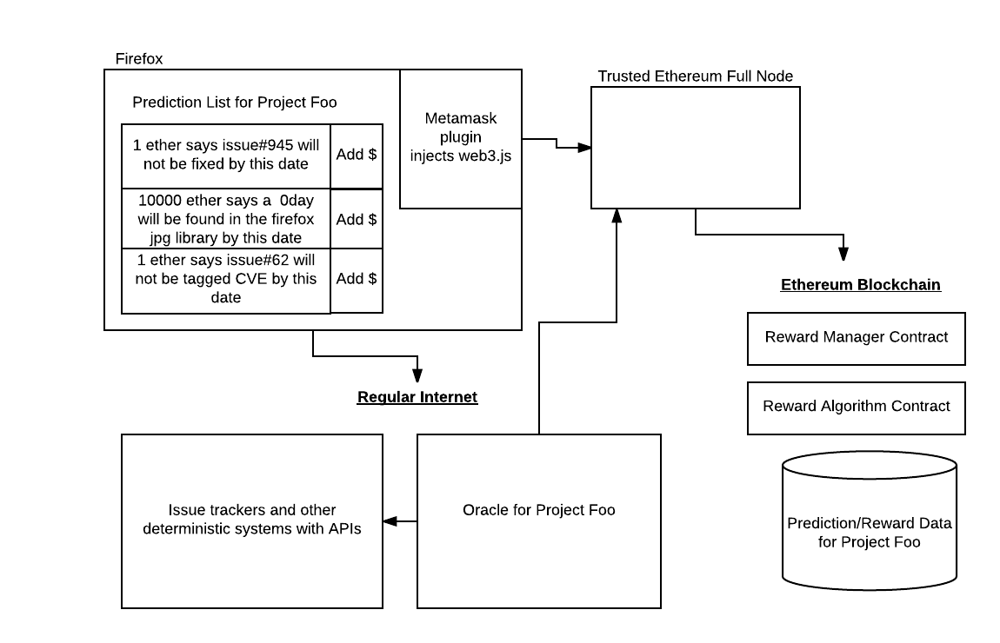

Design Overview¶
The design of this market should be straighforward to developers of decentralized applications (Dapps).
There are three inputs to the market:
1) We are building a marketplace Dapp around software issues. Those issues are found in repositories.
So we need some way to grab issues from repos and bring them into the marketplace. That thing is called an "oracle", and it needs to be configured by someone we're calling a Product Manager to grab details about issues, present them to the marketplace, and periodically update the status of those issues.
2) Users provide input to the market by making predictions and providing rewards. This is 100% through the Dapp, and that info never reaches another system. Users can put currency into escrow using the Dapp to incentivize others to participate by taking the other side of their contract and fixing issues or predicting new issues.
3) Researchers can implement algorithms (for Scoring and Payout at first) using solidity (requires contract upgrade) or our DSLs (we have to write them first) directly in the Dapp. Their results should ultimately be viewable through a dashboard.
There are other possibilities for this - Arbitrage, etc. But lets start with those inputs first.
High Level Processes Interaction Diagram¶
So, to summarize all the players in this process:
Users interact with the marketplace Dapp through any web3 browser (i.e. firefox or chrome with metamask installed, status.im, etc.). This is how they access the web3 apps to make predictions and interact with the other market players.
The Oracle is effectively a configurable cron job that interacts with issue trackers and with the marketplace Dapp - it periodically feeds data on changes in issues to the market.
The Dapp has a web interface that loads data from the ethereum blockchain. The Dapp contains at least two smart contracts (the market and the default reward algo)..
The Market smart contract interacts with users through the web3 UI, and checks the blockchain for data on the currrent status of predictions and bugs when the page is loaded by a user.
The Reward Algorithm smart contract is fed data about current bug statuses, and calculates payouts for users of the system. We will probably use solidity events to drive this, but it could be done with the Oracle in some designs.
Future stuff not shown: Scoring Algos, Bots.
